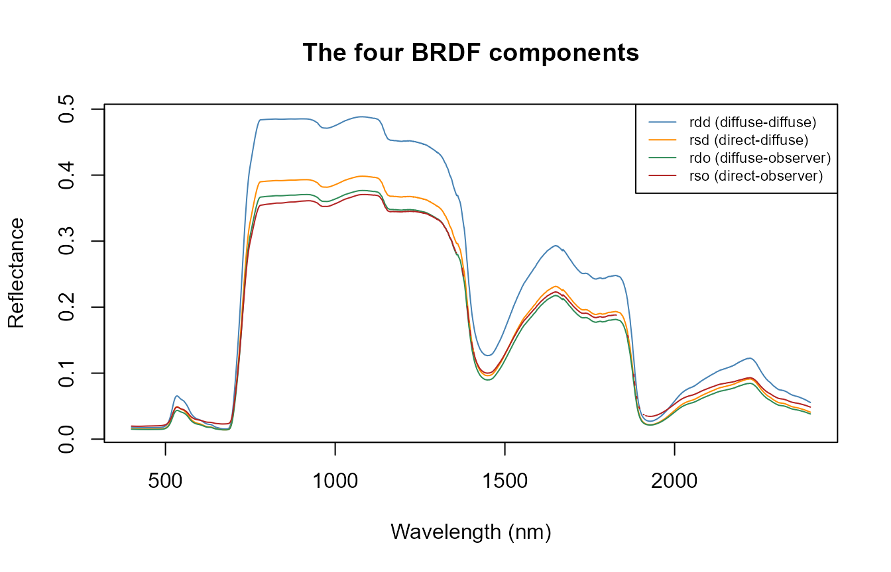
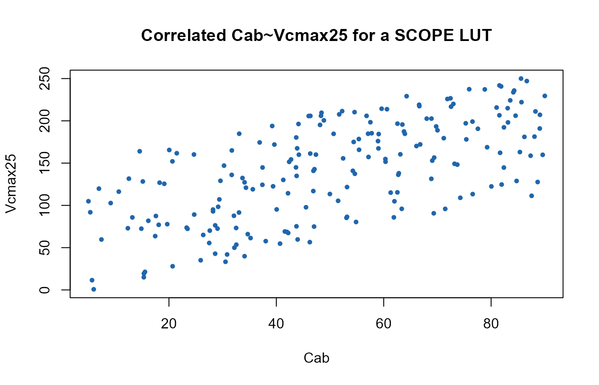

02. Soil, Canopy BRDF, and the SCOPE Input Structure
t02-soil-canopy-brdf.RmdSCOPE needs more input columns than a plain PROSAIL LUT (ToolsRTM
Tutorial 01) – leaf biochemistry, canopy structure, soil, meteorology,
and viewing geometry all in one row. inputs_SCOPE.csv is
SCOPE’s own ranges table; unlike
ToolsRTM::get_distributionLUT() (distribution as an
explicit argument), the distribution choice is baked into the CSV itself
via a Distribution column.
1. The input table
path_input <- system.file("input", package = "SCOPEinR")
inputLUT <- read.table(file.path(path_input, "inputs_SCOPE.csv"), header = TRUE, sep = ",")
inputLUT[inputLUT$variable %in% c("Cab", "LAI", "Vcmax25", "tts"),
c("variable", "lower", "upper", "Distribution", "Mean_D", "Std_D", "default")]
#> variable lower upper Distribution Mean_D Std_D default
#> 2 Cab 5.00 90 Gaussian 50 20 40
#> 15 Vcmax25 0.75 250 Uniform NA NA 70
#> 40 LAI 0.10 7 Uniform NA NA 3
#> 74 tts 0.00 15 Uniform NA NA 30"Fixed" rows (most of the meteorology – Ta,
Rin, Rli, … – and constants like
BallBerry0) are held at their default value
every time. "Uniform" rows sample evenly across
[lower, upper]. "Gaussian" rows
(Cab here) sample around Mean_D with spread
Std_D, truncated to [lower, upper].
2. TOC reflectance: BRDF components
refl (Tutorial 01) is a blend of several BRDF components
– the same directional-vs-hemispherical distinction ToolsRTM’s
Compute_BRF() makes for plain fourSAIL, but SCOPE exposes
all four separately:
table.with.opts <- read.table(file.path(path_input, "setoptions.csv"), header = TRUE, sep = ",")
LUT_default <- read.table(file.path(path_input, "LUT_input.csv"), header = TRUE, sep = ",")
invisible(capture.output(
res <- get.SCOPE(LUT = LUT_default[1, ], options.SCOPE = table.with.opts,
optipar = SCOPEinR::optipar2021.Pro.CX, leaf.model = "fluspect-CX",
canopy.model = "fourSAIL", get.outputs = "ALL", get.plots = FALSE)[[1]]
))
wl_optical <- 400:2400; n <- length(wl_optical)
matplot(wl_optical, cbind(res$data.rad$rdd[1:n], res$data.rad$rsd[1:n],
res$data.rad$rdo[1:n], res$data.rad$rso[1:n]),
type = "l", lty = 1, col = c("steelblue", "darkorange", "seagreen", "firebrick"),
xlab = "Wavelength (nm)", ylab = "Reflectance", main = "The four BRDF components")
legend("topright", c("rdd (diffuse-diffuse)", "rsd (direct-diffuse)",
"rdo (diffuse-observer)", "rso (direct-observer)"),
col = c("steelblue", "darkorange", "seagreen", "firebrick"), lty = 1, cex = 0.7)
refl (Tutorial 01’s apparent reflectance)
combines these according to the actual sun/sky illumination split for
the simulated conditions – the SCOPE equivalent of
ToolsRTM::Compute_BRF()’s
rdot/rsot blend, but with the sky-diffuse
fraction handled explicitly rather than folded into two terms.
3. Correlating two SCOPE traits
Real leaf traits co-vary – e.g. plants with higher photosynthetic
capacity (Vcmax25) often also carry more chlorophyll
(Cab). getLUT.SCOPE() samples every variable
independently; ToolsRTM::getCor() (ToolsRTM Tutorial 05)
generates a correlated pair instead, spliced into the LUT in place of
its independent columns:
n_samples <- 200
LUT <- getLUT.SCOPE(inputLUT = inputLUT, nLUT = n_samples, setseed = 1)
pigments <- ToolsRTM::getCor(n_inputs = 2, setseed = 7, distribution = "Uniform",
nLUT = n_samples, rho = 0.6, Varnames = c("Cab", "Vcmax25"),
MinRange = c(5, 0.75), MaxRange = c(90, 250))
LUT$Cab <- pigments$LUT$Cab
LUT$Vcmax25 <- pigments$LUT$Vcmax25
cat("Target rho: 0.6. Achieved correlation:", round(cor(LUT$Cab, LUT$Vcmax25), 2), "\n")
#> Target rho: 0.6. Achieved correlation: 0.65
plot(LUT$Cab, LUT$Vcmax25, pch = 19, col = "#2166AC", cex = 0.6,
xlab = "Cab", ylab = "Vcmax25", main = "Correlated Cab~Vcmax25 for a SCOPE LUT")
This LUT is ready for
get.SCOPE()/get.SCOPE.parallel() exactly as
built by the plain getLUT.SCOPE() call – only the sampling
of these two columns changed.